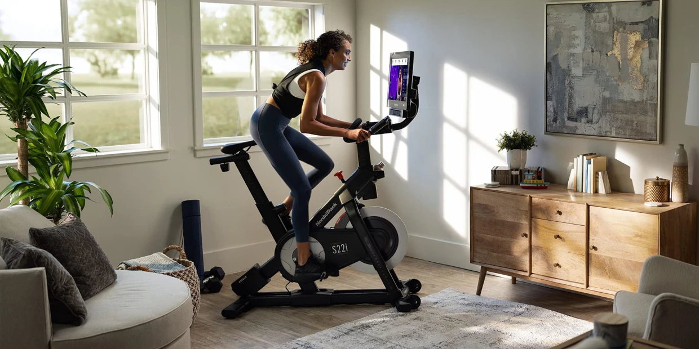

Stationary Bike
Go to bottom
Riding a Stationary Exercise Bike is an efficient and effective way to burn calories, reduce body fat, strengthen the heart, lungs, and muscles. It provides a low-impact, yet highly beneficial aerobic workout that puts less stress on the joints compared to other cardio equipment. The stationary bike targets key muscle groups in the lower body while improving cardiovascular fitness. It enhances lung capacity, boosts endurance, and strengthens muscles including the quadriceps, hamstrings, glutes, and calves. Additionally, stationary bikes offer customizable workout plans to help achieve specific fitness or weight loss goals. With adjustable resistance levels and progress tracking, individuals can tailor their workouts, measure their progress, and enjoy the convenience of a stationary bike for improved physical health and overall well-being.

Benefits of Stationary Exercise Bike
- Cardiovascular Health: Riding a stationary exercise bike is an effective way to improve cardiovascular fitness. It elevates your heart rate, strengthens the heart muscle, and enhances overall cardiovascular endurance.
- Calorie Burning and Weight Loss: A stationary bike workout can help burn calories and contribute to weight loss goals. The intensity of the workout, combined with duration, can create a calorie deficit and promote fat burning.
- Low-Impact Exercise: Stationary bikes offer a low-impact workout that puts minimal stress on the joints. This makes it a suitable option for individuals with joint sensitivities, injuries, or those who prefer a gentler form of exercise.
- Lower Body Muscle Toning and Strength: Riding a stationary bike targets the muscles of the lower body, including the quadriceps, hamstrings, glutes, and calves. Regular use can lead to improved muscle tone, strength, and endurance in these areas.
Muscles Targeted
- Shins: The muscles in the shins, such as the tibialis anterior, are engaged during the upward movement of the pedal stroke. They help to lift the toes and maintain proper foot positioning.
- Core Muscles: The muscles of the core, including the abdominals and lower back muscles, play a role in stabilizing the body and maintaining an upright posture while riding the stationary bike.
- Quadriceps: The quadriceps muscles located in the front of the thigh are actively engaged during the pedaling motion. They work to extend the knee as you push down on the pedals.
- Hamstrings: The hamstrings, located in the back of the thigh, act as stabilizers during the pedaling motion. They help to flex the knee as you pull the pedals upward.
Back to Home